Voronoi Derivatives
Derivatives of Shortest Distance
- Support derivatives of Voronoi noise.
- Calculate derivatives for Worley and Chebyshev noise.
- Create exponential and polynomial smooth Worley variants.
This is the fourth tutorial in a series about pseudorandom surfaces. In it we will calculate derivatives of Voronoi noise.
This tutorial is made with Unity 2020.3.38f1.
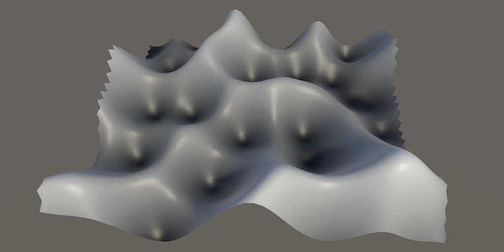
Worley Noise
We start with the Worley version of Voronoi noise. Add F1, F2, and F2−F1 variants of it to ProceduralSurface.
static SurfaceJobScheduleDelegate[,] surfaceJobs = {
…,
{
SurfaceJob<Voronoi1D<LatticeNormal, Worley, F1>>.ScheduleParallel,
SurfaceJob<Voronoi2D<LatticeNormal, Worley, F1>>.ScheduleParallel,
SurfaceJob<Voronoi3D<LatticeNormal, Worley, F1>>.ScheduleParallel
},
{
SurfaceJob<Voronoi1D<LatticeNormal, Worley, F2>>.ScheduleParallel,
SurfaceJob<Voronoi2D<LatticeNormal, Worley, F2>>.ScheduleParallel,
SurfaceJob<Voronoi3D<LatticeNormal, Worley, F2>>.ScheduleParallel
},
{
SurfaceJob<Voronoi1D<LatticeNormal, Worley, F2MinusF1>>.ScheduleParallel,
SurfaceJob<Voronoi2D<LatticeNormal, Worley, F2MinusF1>>.ScheduleParallel,
SurfaceJob<Voronoi3D<LatticeNormal, Worley, F2MinusF1>>.ScheduleParallel
}
};
public enum NoiseType {
Perlin€, PerlinSmoothTurbulence, PerlinValue,
Simplex€, SimplexSmoothTurbulence, SimplexValue,
VoronoiWorleyF1, VoronoiWorleyF2, VoronoiWorleyF2MinusF1
}
Voronoi Data
Because Voronoi noise is constructed by keeping track of the distance to the nearest cell point we also have to keep track of the derivatives matching the directing to that point. To also support F2 a second distance has to be stored as well. So we need derivates for both.
Create a new struct type to store the needed data in Noise.Voronoi, containing two samples. As we'll use the same data in a different way later, let's give it a non-specific VoronoiData name with Sample4 fields a and b.
public struct VoronoiData {
public Sample4 a, b;
}
We'll need to select the minimum of two samples, so let's add a convenient static Select method for this to Sample4, based on math.select.
public static Sample4 Select (Sample4 f, Sample4 t, bool4 b) => new Sample4 {
v = select(f.v, t.v, b),
dx = select(f.dx, t.dx, b),
dy = select(f.dy, t.dy, b),
dz = select(f.dz, t.dz, b)
};
Then replace the UpdateVoronoiMinima method with UpdateVoronoiData, which does the same thing but with VoronoiData and Sample4 values.
//static float4x2 UpdateVoronoiMinima (float4x2 minima, float4 distances) {static VoronoiData UpdateVoronoiData (VoronoiData data, Sample4 sample) { bool4 newMinimum = sample.v < data.a.v; data.b = Sample4.Select( Sample4.Select(data.b, sample, sample.v < data.b.v), data.a, newMinimum ); data.a = Sample4.Select(data.a, sample, newMinimum); return data; }
Now we have to adjust the Voronoi methods so they work correctly. First adjust Voronoi1D.GetNoise4 so it works with the new data and sets its derivative correctly. Adjust the 2D and 3D variants likewise.
//float4x2 minima = 2f;VoronoiData data = default; data.a.v = data.b.v = 2f; for (int u = -1; u <= 1; u++) { SmallXXHash4 h = hash.Eat(l.ValidateSingleStep(x.p0 + u, frequency)); data = UpdateVoronoiData(data, d.GetDistance(h.Floats01A + u - x.g0)); } Sample4 s = default(F).Evaluate(d.Finalize1D(data)); s.dx *= frequency; return s;
To make this compile we have to change the IVoronoiDistance interface to also work with Sample4 and VoronoiData.
public interface IVoronoiDistance {
Sample4 GetDistance (float4 x);
Sample4 GetDistance (float4 x, float4 y);
Sample4 GetDistance (float4 x, float4 y, float4 z);
VoronoiData Finalize1D (VoronoiData data);
VoronoiData Finalize2D (VoronoiData data);
VoronoiData Finalize3D (VoronoiData data);
}
Adjust the Worley and Chebyshev implementation to match. All changes are trivial type adjustments, except for Worley.Finalize2D and Worley.Finalize3D, which need a bit more work because they perform the delayed square root operation on the distances. Ignore the derivatives for now.
public VoronoiData Finalize2D (VoronoiData data) {
data.a.v = sqrt(min(data.a.v, 1f));
data.b.v = sqrt(min(data.b.v, 1f));
return data;
}
public VoronoiData Finalize3D (VoronoiData data) => Finalize2D(data);
Finally, adjust the IVoronoiFunction interface and its F1, F2, and F2MinusF1 implementations to also act on the new data.
public interface IVoronoiFunction {
Sample4 Evaluate (VoronoiData data);
}
public struct F1 : IVoronoiFunction {
public Sample4 Evaluate (VoronoiData data) => data.a;
}
public struct F2 : IVoronoiFunction {
public Sample4 Evaluate (VoronoiData data) => data.b;
}
public struct F2MinusF1 : IVoronoiFunction {
public Sample4 Evaluate (VoronoiData data) => data.b - data.a;
}
At this point Voronoi noise should work as before, but is now ready to also provide analytical derivatives.
1D Derivatives
Once again we start with the derivatives for a single dimension. Adjust Worley.GetDistance with a single parameter so it explicitly returns a Sample4 value.
public Sample4 GetDistance (float4 x) => new Sample4 {
v = abs(x)
};
In a single dimension distance is simply `d(x)=|x|`, so the derivative is the same as for turbulence gradients: `d'(x)=x/|x|`. But because we're evaluating increasing distances the sign of the derivative is flipped compared to turbulence.
v = abs(x), dx = select(-1f, 1f, x < 0f)
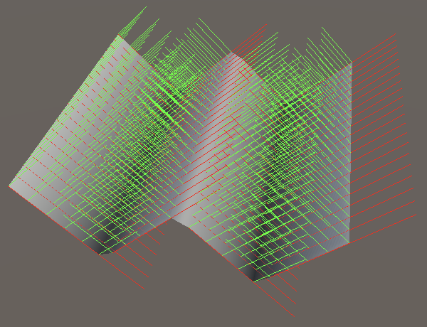
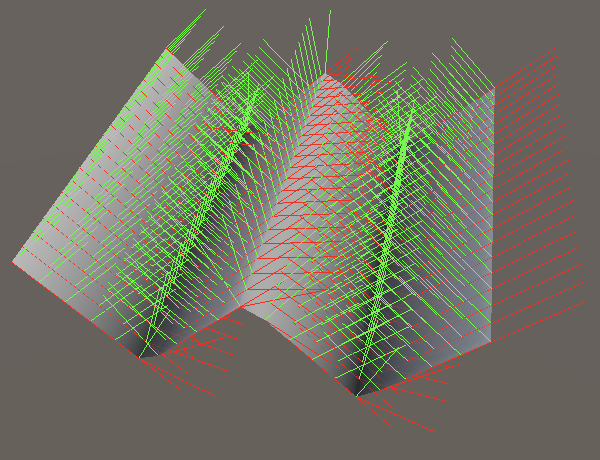
Note that we get derivative discontinuities in valleys just like with turbulence, and also at peaks. So the results won't be smooth.
2D Derivatives
For the 2D case we have to normalize a 2D vector, so we have the function `d(x,z)=sqrt(x^2+z^2)`. The partial X derivative of that is `d'_x(x,z)=-x/(d(x,z))`.
Because we delay the square root operation we also delay the scaling of the derivative. We'll use `x` and `z` verbatim in GetDistance for two dimensions.
public Sample4 GetDistance (float4 x, float4 y) => new Sample4 {
v = x * x + y * y,
dx = x,
dz = y
};
Next, adjust Finalize2D so it applies the square root to the value and uses a select statement to enforce keeping distances only if they are less than 1.
public VoronoiData Finalize2D (VoronoiData data) {
//data.a.v = sqrt(min(data.a.v, 1f));
//data.b.v = sqrt(min(data.b.v, 1f));
bool4 keepA = data.a.v < 1f;
data.a.v = select(1f, sqrt(data.a.v), keepA);
bool4 keepB = data.b.v < 1f;
data.b.v = select(1f, sqrt(data.b.v), keepB);
return data;
}
Then add the division and sign flip of the derivatives if they are to be kept, and set them to zero otherwise.
data.a.v = select(1f, sqrt(data.a.v), keepA); data.a.dx = select(0f, -data.a.dx / data.a.v, keepA); data.a.dz = select(0f, -data.a.dz / data.a.v, keepA); bool4 keepB = data.b.v < 1f; data.b.v = select(1f, sqrt(data.b.v), keepB); data.b.dx = select(0f, -data.b.dx / data.b.v, keepB); data.b.dz = select(0f, -data.b.dz / data.b.v, keepB);
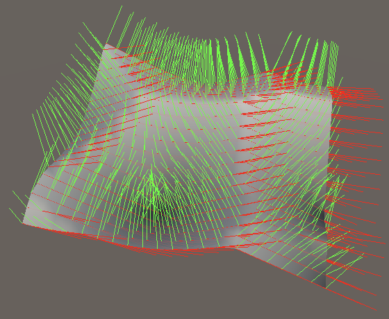
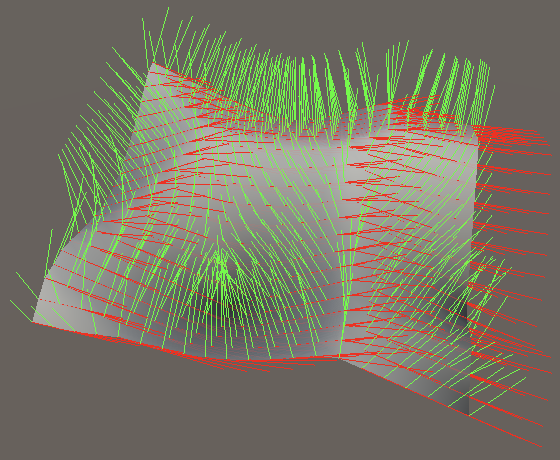
3D Derivatives
Adjust GetDistance for three dimensions in the same way that we adjusted the 2D version.
public Sample4 GetDistance (float4 x, float4 y, float4 z) => new Sample4 {
v = x * x + y * y + z * z,
dx = x,
dy = y,
dz = z
};
Finalize3D becomes a copy of Finalize2D that includes all three derivatives.
public VoronoiData Finalize3D (VoronoiData data) {
bool4 keepA = data.a.v < 1f;
data.a.v = select(1f, sqrt(data.a.v), keepA);
data.a.dx = select(0f, -data.a.dx / data.a.v, keepA);
data.a.dy = select(0f, -data.a.dy / data.a.v, keepA);
data.a.dz = select(0f, -data.a.dz / data.a.v, keepA);
bool4 keepB = data.b.v < 1f;
data.b.v = select(1f, sqrt(data.b.v), keepB);
data.b.dx = select(0f, -data.b.dx / data.b.v, keepB);
data.b.dy = select(0f, -data.b.dy / data.b.v, keepB);
data.b.dz = select(0f, -data.b.dz / data.b.v, keepB);
return data;
}
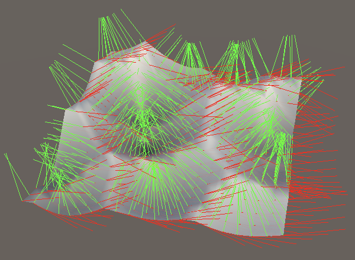
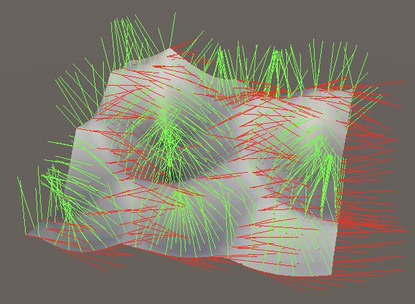
We can make the 2D versions forward to the 3D versions because Burst will detect that the Y derivative will always be zero and optimize it away.
public Sample4 GetDistance (float4 x, float4 y) => GetDistance(x, 0f, y); … public VoronoiData Finalize2D (VoronoiData data) => Finalize3D(data);
Chebyshev Noise
With Worley noise completed we also add Chebyshev noise to ProceduralNoise.
static SurfaceJobScheduleDelegate[,] surfaceJobs = {
…,
{
SurfaceJob<Voronoi1D<LatticeNormal, Worley, F1>>.ScheduleParallel,
SurfaceJob<Voronoi2D<LatticeNormal, Chebyshev, F1>>.ScheduleParallel,
SurfaceJob<Voronoi3D<LatticeNormal, Chebyshev, F1>>.ScheduleParallel
},
{
SurfaceJob<Voronoi1D<LatticeNormal, Worley, F2>>.ScheduleParallel,
SurfaceJob<Voronoi2D<LatticeNormal, Chebyshev, F2>>.ScheduleParallel,
SurfaceJob<Voronoi3D<LatticeNormal, Chebyshev, F2>>.ScheduleParallel
},
{
SurfaceJob<Voronoi1D<LatticeNormal, Worley, F2MinusF1>>.ScheduleParallel,
SurfaceJob<Voronoi2D<LatticeNormal, Chebyshev, F2MinusF1>>.ScheduleParallel,
SurfaceJob<Voronoi3D<LatticeNormal, Chebyshev, F2MinusF1>>.ScheduleParallel
}
};
public enum NoiseType {
…
VoronoiWorleyF1, VoronoiWorleyF2, VoronoiWorleyF2MinusF1,
VoronoiChebyshevF1, VoronoiChebyshevF2, VoronoiChebyshevF2MinusF1
}
1D Worley and Chebyshev noise are identical, so for that case Chebyshev.GetDistance can simply rely on the implementation of Worley.
public Sample4 GetDistance (float4 x) => default(Worley).GetDistance(x);
2D Derivatives
Chebyshev noise effectively works like separate 1D noise in all used dimensions, picking the greatest distance. Adjust the 2D version of GetDistance so it returns a Sample4 value. Do this with select logic, meaning that we keep X if it is greater than Y.
public Sample4 GetDistance (float4 x, float4 y) { //=> max(abs(x), abs(y));
bool4 keepX = abs(x) > abs(y);
return new Sample4 {
v = select(abs(y), abs(x), keepX)
};
}
Then add the X derivative, if the X result it kept.
v = select(abs(y), abs(x), keepX), dx = select(0f, select(-1f, 1f, x < 0f), keepX)
Likewise for the Z derivative, but as the alternative option based on Y.
dx = select(0f, select(-1f, 1f, x < 0f), keepX), dz = select(select(-1f, 1f, y < 0f), 0f, keepX)
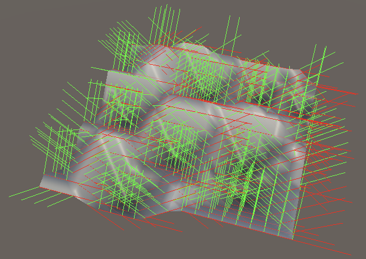
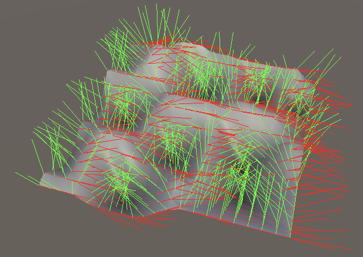
3D Derivatives
Also adjust the 3D version of GetDistance so it returns an Sample4 value, again using select logic. In this case we keep X if it is greater than both Y and Z. Otherwise we keep Y if it is greater than Z.
public Sample4 GetDistance (float4 x, float4 y, float4 z) {
bool4 keepX = abs(x) > abs(y) & abs(x) > abs(z);
bool4 keepY = abs(y) > abs(z);
return new Sample4 {
v = select(select(abs(z), abs(y), keepY), abs(x), keepX)
};
}
The X derivative is exactly the same as for 2D.
v = select(select(abs(z), abs(y), keepY), abs(x), keepX), dx = select(0f, select(-1f, 1f, x < 0f), keepX)
The Y derivative requires an extra select, because it is only used when Y is kept while X is not.
dx = select(0f, select(-1f, 1f, x < 0f), keepX), dy = select(select(0f, select(-1f, 1f, y < 0f), keepY), 0f, keepX)
And the Z derivative is for the only remaining option.
dy = select(select(0f, select(-1f, 1f, y < 0f), keepY), 0f, keepX), dz = select(select(select(-1f, 1f, z < 0f), 0f, keepY), 0f, keepX)
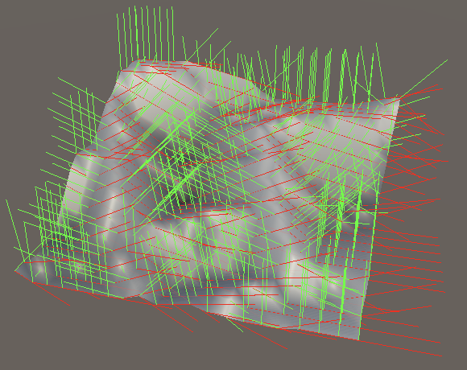
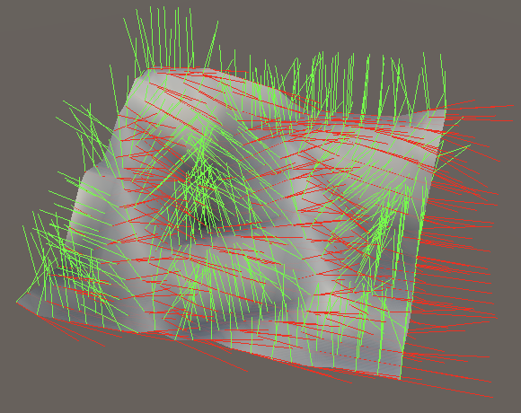
Smooth Worley Noise
Like the turbulence noise variants, Voronoi noise isn't smooth and can thus produce jagged ridges and ugly shading when used to displace a surface. As Chebyshev noise is defined by its straight sharp ridges we leave it be, but Worley noise is often used for organic patterns so a smooth variant of that would be useful.
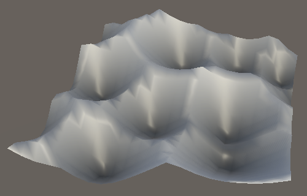
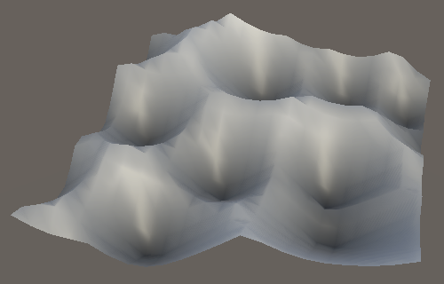
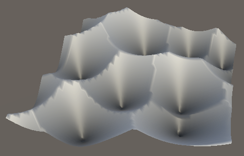
We cannot fix the ridges with a simple application of the smoothstep function on top of the minimum distance, because the ridges occur at arbitrary distances. Smoothing them requires applying a filter to the process of selecting the minimum distance.
To visualize the problem I will base it on the following configurable Desmos graph, which contains three 1D Voronoi cells with one point each:
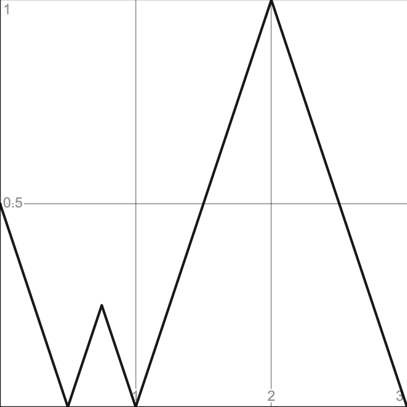
Our goal is to smooth that graph.
Log-Sum-Exp
One way to come up with a smooth minimum is to apply a function known as Log-Sum-Exp: `lse(v)=logsum_(i=1)^(n)e^(v_i)` where `v` is a vector with `n` values, `e` is Euler's number and `log` is the natural logarithm. For three values it would look like `lse(a,b,c)=log(e^a+e^b+e^c)`.
The idea is that `log(e^x)=x` but if we take the logarithm of the sum of multiple parts we merge them somehow, depending on the exact math we use. To create a smoothing effect approximating the minimum we can use `sm(v)=-lse(-v)`.
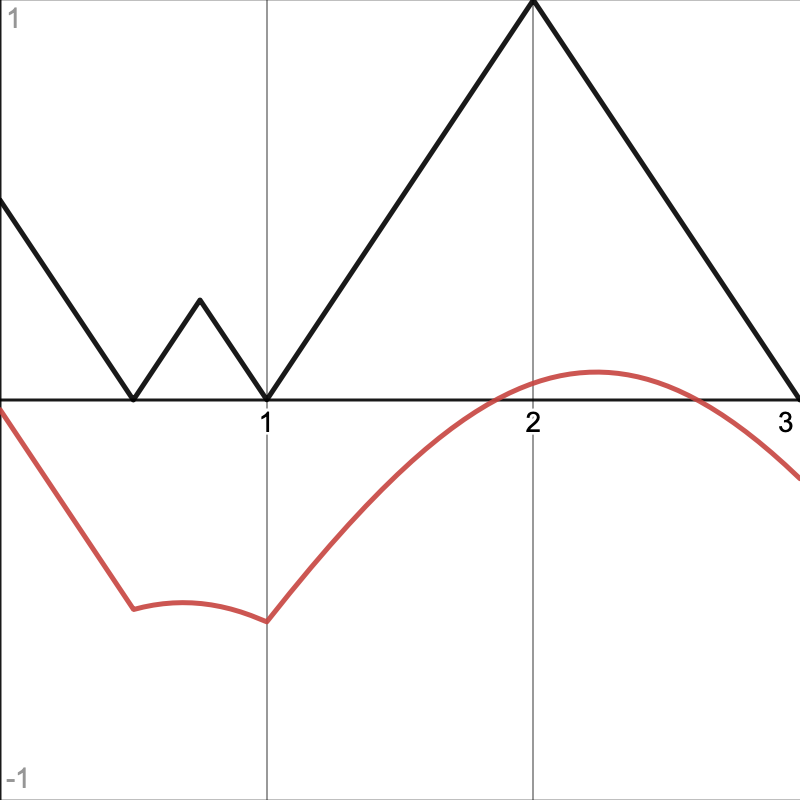
The result rounds ridges and is strictly smaller than a straight minimum, but isn't useful yet. We can control how closely we approximate the true minimum by adding a smoothing factor `s` so we get `sm(v)=(lse(-sv))/-s`.
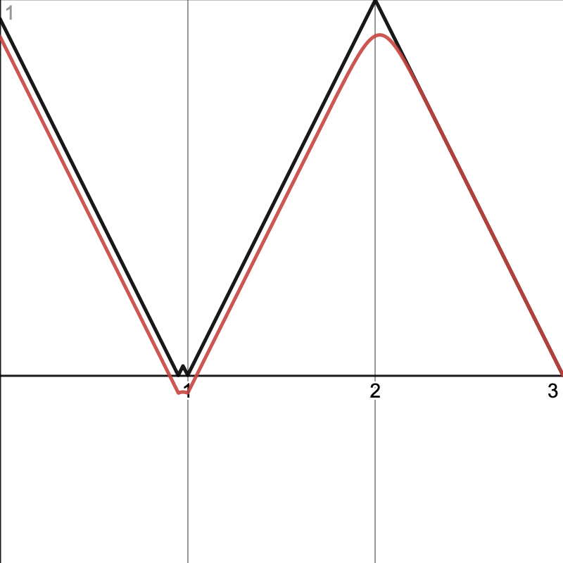
With the smoothing factor set to 10 we get a fairly good approximation of the minimum with rounded ridges. However, the result can fall outside the 0–1 range. That we can end up with negative values is already clear, but in the case of 2D and 3D noise it can also exceed 1 because the true minimum can go up to √3 in three dimensions. If we scale up the graph so each 1D cell has a size of √3 then we can see what happens at such distances.
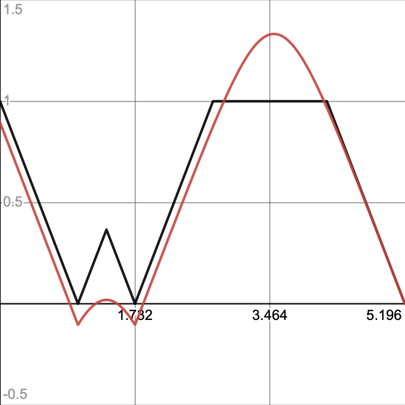
We can clamp the result to the 0–1 range, then apply the smoothstep function to smooth out the edges. This also rounds the valleys so we end up with a smooth curve everywhere.
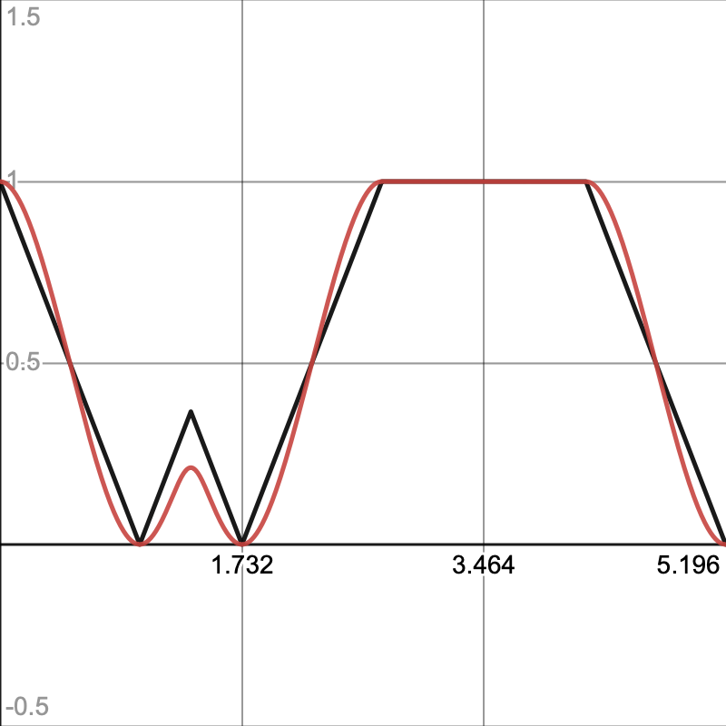
Voronoi Data
To support this alternative approach of calculating the distance we have to make the way we evaluate the Voronoi data vary per variant. So add the UpdateVoronoiData method signature to IVoronoiDistance along with an InitialData getter property to initialize the data.
VoronoiData UpdateVoronoiData (VoronoiData data, Sample4 sample);
VoronoiData InitialData { get; }
Then copy the code from the existing UpdateVoronoiData static method into a new method that implements it in Worley. Also add the required property, which initializes the distances to 2.
public VoronoiData UpdateVoronoiData (VoronoiData data, Sample4 sample) {
bool4 newMinimum = sample.v < data.a.v;
data.b = Sample4.Select(
Sample4.Select(data.b, sample, sample.v < data.b.v),
data.a,
newMinimum
);
data.a = Sample4.Select(data.a, sample, newMinimum);
return data;
}
public VoronoiData InitialData => new VoronoiData {
a = new Sample4 { v = 2f },
b = new Sample4 { v = 2f }
};
Chebyshev has the exact same implementation, so can foward to Worley.
public VoronoiData UpdateVoronoiData (VoronoiData data, Sample4 sample) => default(Worley).UpdateVoronoiData(data, sample); public VoronoiData InitialData => default(Worley).InitialData;
Then update Voronoi1D.GetNoise4 so it relies on the implementation of its distance type for initializing and updating the Voronoi data.
VoronoiData data = d.InitialData;//data.a.v = data.b.v = 2f;for (int u = -1; u <= 1; u++) { SmallXXHash4 h = hash.Eat(l.ValidateSingleStep(x.p0 + u, frequency)); data = d.UpdateVoronoiData(data, d.GetDistance(h.Floats01A + u - x.g0)); }
Change the 2D and 3D methods likewise, then remove the static UpdateVoronoiData method.
//static VoronoiData UpdateVoronoiData (VoronoiData data, Sample4 sample) { … }
Smooth Variant
Now that we know how to create a smooth minimum we introduce a SmoothWorley variant implementation of IVoronoiDistance. Begin with a minimal stub that does nothing. Like with Worley we can forward the 2D invocations to the 3D versions.
public struct SmoothWorley : IVoronoiDistance {
public Sample4 GetDistance (float4 x) => default;
public Sample4 GetDistance (float4 x, float4 y) => GetDistance(x, 0f, y);
public Sample4 GetDistance (float4 x, float4 y, float4 z) => default;
public VoronoiData Finalize1D (VoronoiData data) => data;
public VoronoiData Finalize2D (VoronoiData data) => Finalize3D(data);
public VoronoiData Finalize3D (VoronoiData data) => data;
public VoronoiData UpdateVoronoiData (VoronoiData data, Sample4 sample) => data;
public VoronoiData InitialData => default;
}
Add the F1 version of it to ProceduralSurface.
static SurfaceJobScheduleDelegate[,] surfaceJobs = {
…
{
SurfaceJob<Voronoi1D<LatticeNormal, Worley, F2MinusF1>>.ScheduleParallel,
SurfaceJob<Voronoi2D<LatticeNormal, Worley, F2MinusF1>>.ScheduleParallel,
SurfaceJob<Voronoi3D<LatticeNormal, Worley, F2MinusF1>>.ScheduleParallel
},
{
SurfaceJob<Voronoi1D<LatticeNormal, SmoothWorley, F1>>.ScheduleParallel,
SurfaceJob<Voronoi2D<LatticeNormal, SmoothWorley, F1>>.ScheduleParallel,
SurfaceJob<Voronoi3D<LatticeNormal, SmoothWorley, F1>>.ScheduleParallel
},
…
};
public enum NoiseType {
…
VoronoiWorleyF1, VoronoiWorleyF2, VoronoiWorleyF2MinusF1, VoronoiWorleySmoothLSE,
VoronoiChebyshevF1, VoronoiChebyshevF2, VoronoiChebyshevF2MinusF1
}
Smooth 1D
Beginning with one-dimensional smooth Worley noise, GetDistance is once again the same as for regular Worley noise, because we'll perform the exponentiation later.
public Sample4 GetDistance (float4 x) => default(Worley).GetDistance(x);
The smoothing factor could be made variable, but we'll simply use a constant set to 10.
const float smoothLSE = 10f;
For this variant UpdateVoronoiData doesn't select the minimum. It instead sums the exponentiations. This means that the data must start at zero, which is the current default.
public VoronoiData UpdateVoronoiData (VoronoiData data, Sample4 sample) {
float4 e = exp(-smoothLSE * sample.v);
data.a.v += e;
return data;
}
We must also sum the derivatives of `e^(-sx)`, which are `-sx'e^(-sx)`. We'll omit the final multiplication with `-s` here, as we can cancel it later, so only calculate `x'e^(-sx)`.
data.a.v += e; data.a.dx += e * sample.dx; data.a.dy += e * sample.dy; data.a.dz += e * sample.dz;
In Finalize1D we take the logarithm of the value and divide by the negative smoothing factor.
public VoronoiData Finalize1D (VoronoiData data) {
data.a.v = log(data.a.v) / -smoothLSE;
return data;
}
We have to calculate the derivative of `log(f(x))/-s` as well, which is `(f'(x))/(-s f(x))`. Here the multiplication with `-s` that we skipped gets canceled by omitting the division.
data.a.dx /= data.a.v; data.a.v = log(data.a.v) / -smoothLSE;
With the LSE portion complete, we move on to apply smoothstep on top of it. As we're now using that function in two places let's add a convenient property for it to Sample4, for which we can copy the code from the Smoothstep gradient modifier.
public Sample4 Smoothstep€ {
get {
Sample4 s = this;
float4 d = 6f * v * (1f - v);
s.dx *= d;
s.dy *= d;
s.dz *= d;
s.v *= v * (3f - 2f * v);
return s;
}
}
Smoothstep.EvaluateCombined can then be simplified.
public Sample4 EvaluateCombined (Sample4 value) => default(G).EvaluateCombined(value).Smoothstep€;
And we can use the property in SmoothWorley.Finalize1D.
data.a.v = log(data.a.v) / -smoothLSE; data.a = data.a.Smoothstep€;
The final step it to clamp the noise, before applying smoothstep. Because 1D distances never exceed 1 we only have to check for negative values.
data.a = Sample4.Select(default, data.a.Smoothstep€, data.a.v > 0f);
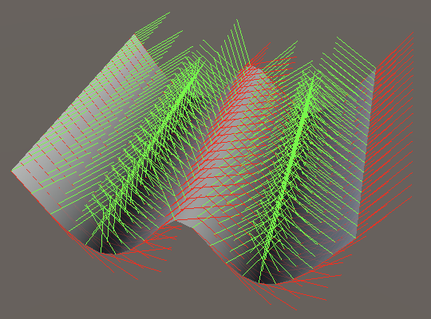
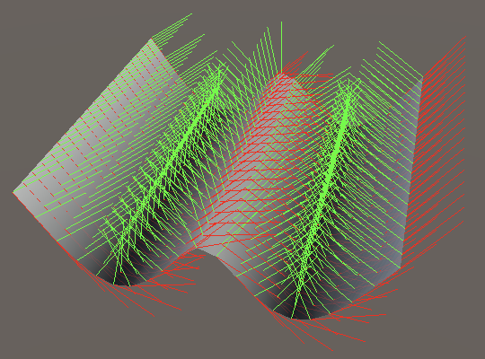
Smooth 2D and 3D
The 2D and 3D versions of SmoothWorley.GetDistance must provide the linear distance, so must calculate the square root immediately.
public Sample4 GetDistance (float4 x, float4 y, float4 z) {
float4 v = sqrt(x * x + y * y + z * z);
return new Sample4 {
v = v,
dx = x / -v,
dy = y / -v,
dz = y / -v
};
}
Finalization is the same as for 1D but with all three derivatives.
public VoronoiData Finalize3D (VoronoiData data) {
data.a.dx /= data.a.v;
data.a.dy /= data.a.v;
data.a.dz /= data.a.v;
data.a.v = log(data.a.v) / -smoothLSE;
data.a =
Sample4.Select(default, data.a.Smoothstep€, data.a.v > 0f);
return data;
}
And it also has to guard against distances exceeding 1.
data.a = Sample4.Select(default, data.a.Smoothstep€, data.a.v > 0f & data.a.v < 1f);
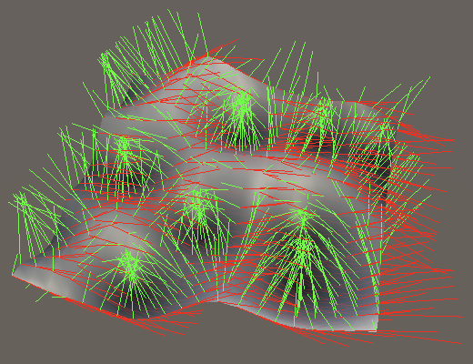
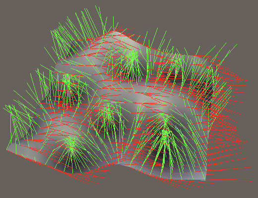
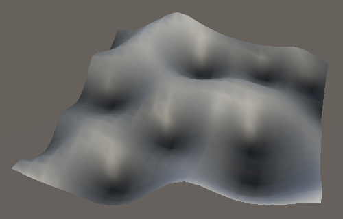
Polynomial Variant
One downside of the LSE function is that it is slow, because exp and log are slow, just like sin is slow. Another downside is that when using a high smoothing factor the floating-point precision limitations can become a problem. So let's also support a polynomial variant that approximates the LSE approach.
The smooth minimum function that we'll use is `psm(a,b)=min(a,b)-h(a,b)` where `h(a,b)=s/4max(1-|a-b|/s,0)^2`, with smoothness applied at the end.
That function takes the standard minimum and then subtracts a smoothing function `h` that decreases as the difference between `a` and `b` increases.
The `psm` function is non-associative, meaning that `psm(psm(a,b),c)` and `psm(a,psm(b,c))` are not equal, which can lead to slight inconsistencies between cells. However, this difference is unnoticeable in practice.
What follows is a graph that compares the LSE approach at smoothness 10 in red with the polynomial approach at smoothness ¼. It shows two lines for the two ways to evaluate three distances, in blue and green, which almost perfectly overlap. The dashed orange line shows the maximum absolute difference between LSE and the two polynomial lines ×10. The dotted purple line shows the absolute difference between both polynomial lines ×100.
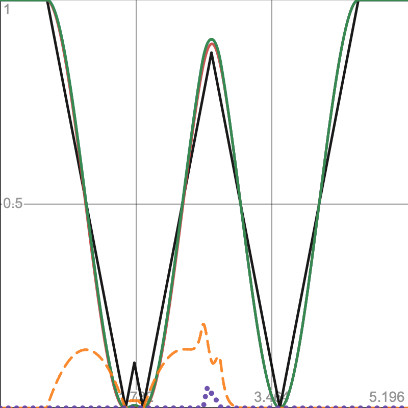
Add entries for this approach to ProceduralSurface. As again we'll only support F1 let's use the F2 output of our existing SmoothWorley variant instead of creating another new type.
{
SurfaceJob<Voronoi1D<LatticeNormal, SmoothWorley, F1>>.ScheduleParallel,
SurfaceJob<Voronoi2D<LatticeNormal, SmoothWorley, F1>>.ScheduleParallel,
SurfaceJob<Voronoi3D<LatticeNormal, SmoothWorley, F1>>.ScheduleParallel
},
{
SurfaceJob<Voronoi1D<LatticeNormal, SmoothWorley, F2>>.ScheduleParallel,
SurfaceJob<Voronoi2D<LatticeNormal, SmoothWorley, F2>>.ScheduleParallel,
SurfaceJob<Voronoi3D<LatticeNormal, SmoothWorley, F2>>.ScheduleParallel
},
…
VoronoiWorleyF1, VoronoiWorleyF2, VoronoiWorleyF2MinusF1,
VoronoiWorleySmoothLSE, VoronoiWorleySmoothPoly,
We'll use ¼ as the constant smoothness factor for the polynomial smooth minimum in SmoothWorley.
const float smoothLSE = 10f, smoothPoly = 0.25f;
As we're taking a smoothed minimum for F2 we must once again initialize the Voronoi data with a large value, but only b, which we'll use to store the polynomial variant.
public VoronoiData InitialData => new VoronoiData {
b = new Sample4 { v = 2f }
};
Begin by storing the straight minimum in b when updating the data.
public VoronoiData UpdateVoronoiData (VoronoiData data, Sample4 sample) {
float4 e = exp(-smoothLSE * sample.v);
data.a.v += e;
data.a.dx += e * sample.dx;
data.a.dy += e * sample.dy;
data.a.dz += e * sample.dz;
…
data.b = Sample4.Select(data.b, sample, sample.v < data.b.v);
return data;
}
And apply smoothstep along with clamping when finalizing, as for the LSE approach.
public VoronoiData Finalize1D (VoronoiData data) {
…
data.a = Sample4.Select(default, data.a.Smoothstep, data.a.v > 0f);
data.b = Sample4.Select(default, data.b.Smoothstep, data.b.v > 0f);
return data;
}
…
public VoronoiData Finalize3D (VoronoiData data) {
…
data.a =
Sample4.Select(default, data.a.Smoothstep, data.a.v > 0f & data.a.v < 1f);
data.b =
Sample4.Select(default, data.b.Smoothstep, data.b.v > 0f & data.b.v < 1f);
return data;
}
That gets us the standard clamped minimum as F2. To apply smoothing calculate `1-|a-b|/s` before the selection and check whether smoothing needs to be applied, based on whether it is greater than zero.
float4 h = 1f - abs(data.b.v - sample.v) / smoothPoly; bool4 smooth = h > 0f; data.b = Sample4.Select(data.b, sample, sample.v < data.b.v);
Then calculate the rest of `h(a,b)` and subtract it from the minimum if smoothing is needed.
bool4 smooth = h > 0f; h = 0.25f * smoothPoly * h * h; data.b = Sample4.Select(data.b, sample, sample.v < data.b.v); data.b.v -= select(0f, h, smooth); return data;
Next, calculate the derivatives `h'(a,b)`.
float4 h = 1f - abs(data.b.v - sample.v) / smoothPoly; float4 hdx = data.b.dx - sample.dx, hdy = data.b.dy - sample.dy, hdz = data.b.dz - sample.dz; bool4 ds = data.b.v - sample.v < 0f; hdx = select(-hdx, hdx, ds) * 0.5f * h; hdy = select(-hdy, hdy, ds) * 0.5f * h; hdz = select(-hdz, hdz, ds) * 0.5f * h; bool4 smooth = h > 0f; h = 0.25f * smoothPoly * h * h;
Then subtract those derivatives from the derivatives of the minimum when appropriate.
data.b.v -= select(0f, h, smooth); data.b.dx -= select(0f, hdx, smooth); data.b.dy -= select(0f, hdy, smooth); data.b.dz -= select(0f, hdz, smooth);
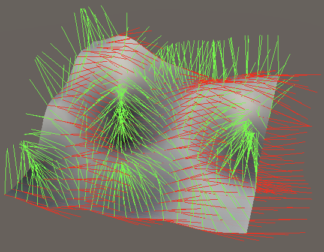
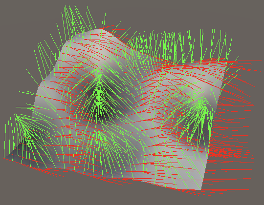
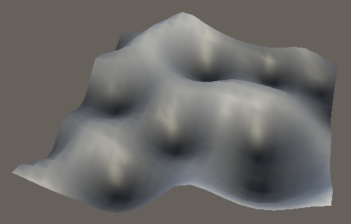
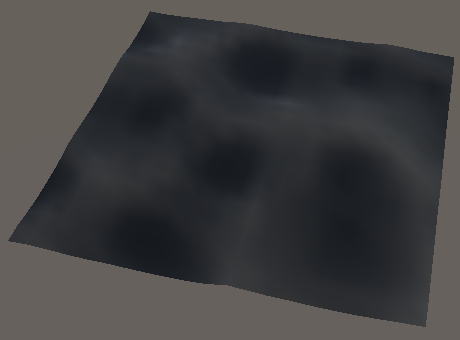
The next tutorial is Spherical Elevation.